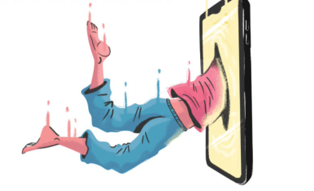

Reading Response

This reading was definitely difficult to comprehend. To my understanding, I think what Baudrillard is addressing is essentially the threats of a new era of media and communication, and how might that play into our relationship with media. He uses the televisions and cars as examples which is up to date during the time of this text, but the concepts brought up are still applicable till today. I thought the idea of object versus interaction was a memorable point. The new systems of media and communication creates an intangible space that gives rise to interactions and extensive possibilities; in other words, the object media of communication is no longer what we obsess over but it is the interaction with the object media that we seek continuously. An obvious example is social media - the endless instant gratification, the validation we receive from virtual likes/comments/views, the attention culture, the fake profiles, multiple “personalities”, filters, etc. While we have come to accept these as are “normal” to some extent, such intangible spaces also opens up a future for intangible realities (I’m thinking VRs).